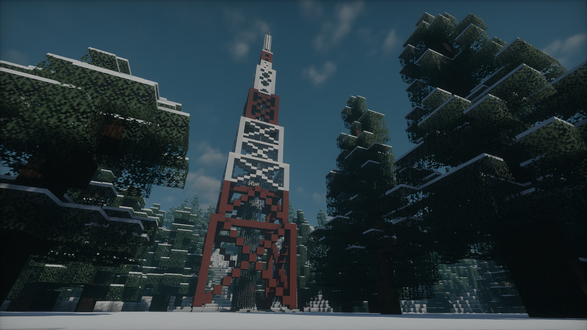
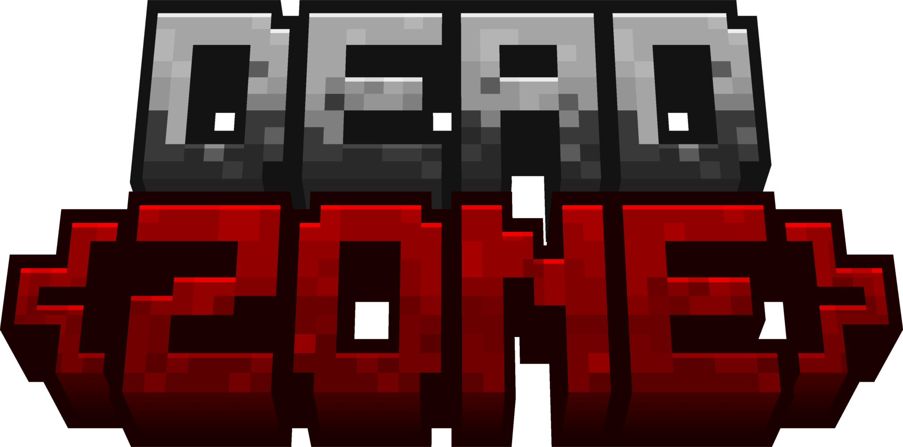

A Minecraft Survival Horror Modpack
DEADZONE is a multiplayer survival modpack within an apocalyptic world. The modpack is played in adventure mode and the experience is carefully crafted to promote PVP and PVE. Find settlements, gather loot and weapons, and find your way into the safezones.
Official Servers. DEADZONE runs official servers using its custom map. Currently, US and EU servers are available, sponsored by Bisect Hosting.
Official Map. ZAREVYN is a massive 7000×7000 map built for DEADZONE by Zephyrusjz.
◈ Screenshots ◈